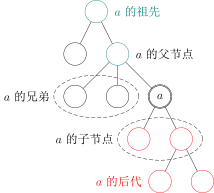
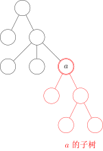
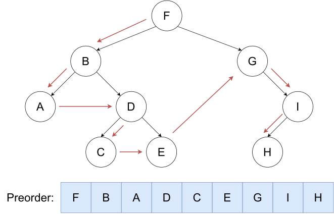
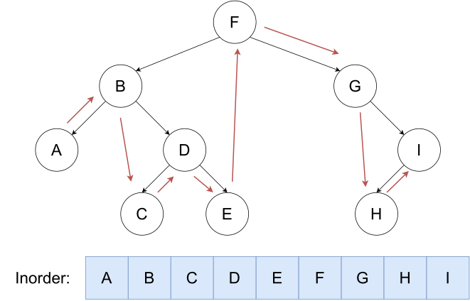
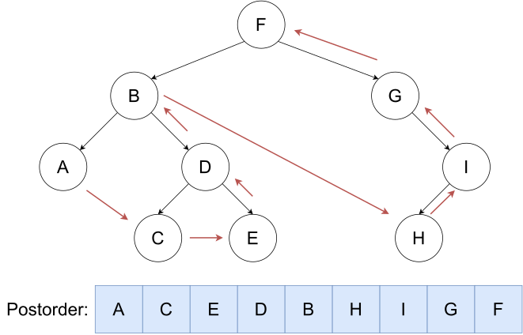
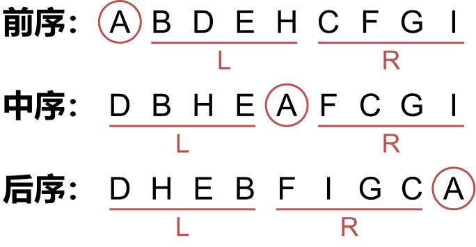
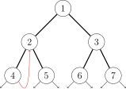

OI Wiki · prijevod · Teorija grafovaOI Wiki · translation · Graph theory
Osnove stabalaTree basics
Uvod
Stablo u teoriji grafova izgleda kao stablo u stvarnom životu, samo što pri rješavanju zadataka korijen obično stavljamo gore. Ta struktura podataka izgleda kao naopako okrenuto stablo, pa je po tome i dobila ime.
Definicija
Stablo bez fiksiranog korijenskog čvora naziva se nekorijensko stablo (unrooted tree). Nekorijensko stablo ima nekoliko ekvivalentnih formalnih definicija:
-
povezan neusmjeren graf s \(n\) čvorova i \(n-1\) bridova
-
neusmjeren povezan graf bez ciklusa
-
neusmjeren graf u kojem između svaka dva čvora postoji točno jedan jednostavni put
-
povezan graf u kojem je svaki brid most
-
graf bez ciklusa u kojem dodavanje brida između bilo koja dva različita čvora daje graf s točno jednim ciklusom
Ako u nekorijenskom stablu odaberemo jedan čvor i nazovemo ga korijenom, dobivamo korijensko stablo (rooted tree). Korijensko stablo često se i dalje prikazuje kao neusmjeren graf, samo što je među čvorovima određen odnos nadređenosti; više o tome u nastavku.
Pojmovi vezani uz stabla
Vrijede za nekorijenska i korijenska stabla
-
Šuma (forest): graf u kojem je svaka komponenta povezanosti stablo. Po definiciji je i jedno stablo šuma.
-
Razapinjuće stablo (spanning tree): razapinjući podgraf povezanog neusmjerenog grafa koji je ujedno stablo. Drugim riječima, iz skupa bridova grafa odaberemo \(n - 1\) bridova koji povezuju sve vrhove.
-
List (leaf node) nekorijenskog stabla: čvor stupnja najviše \(1\).
Zašto ne stupnja točno \(1\)?
Razmotrite \(n = 1\).
-
List (leaf node) korijenskog stabla: čvor bez djece.
Vrijede samo za korijenska stabla
- Roditelj (parent node): za svaki čvor osim korijena, drugi čvor na putu od tog čvora do korijena.
Korijen nema roditelja. - Predak (ancestor): čvorovi na putu od čvora do korijena, osim samog čvora.
Skup predaka korijena je prazan. - Dijete (child node): ako je \(u\) roditelj od \(v\), onda je \(v\) dijete od \(u\).
Redoslijed djece u pravilu se ne razlikuje; iznimka su binarna stabla. - Dubina čvora (depth): broj bridova na putu do korijena.
- Visina stabla (height): najveća dubina među svim čvorovima.
- Braća (sibling): djeca istog roditelja međusobno su braća.
- Potomak (descendant): djeca i potomci djece.
Ili drukčije: ako je \(u\) predak od \(v\), onda je \(v\) potomak od \(u\).

-
Podstablo (subtree): podgraf u kojem se čvor nalazi nakon što uklonimo brid prema njegovu roditelju.

Posebna stabla
-
Lanac (chain/path graph): stablo u kojem je svaki čvor incidentan s najviše \(2\) brida.
-
Zvijezda (star): stablo u kojem postoji čvor \(u\) takav da su svi čvorovi osim \(u\) povezani s \(u\).
-
Korijensko binarno stablo (rooted binary tree): korijensko stablo u kojem svaki čvor ima najviše dvoje djece. Često se razlikuje redoslijed dvoje djece pa ih zovemo lijevo i desno dijete.
U većini slučajeva izraz binarno stablo označava korijensko binarno stablo. -
Puno binarno stablo (full/proper binary tree): binarno stablo u kojem svaki čvor ima 0 ili 2 djece. Drugim riječima, svaki je čvor ili list ili su mu i lijevo i desno podstablo neprazni.
-
Potpuno binarno stablo (complete binary tree): samo čvorovi na najdonje dvije razine smiju imati stupanj manji od 2, a čvorovi najdonje razine zauzimaju uzastopna mjesta skroz lijevo na toj razini.
-
Savršeno binarno stablo (perfect binary tree): binarno stablo u kojem svi listovi imaju istu dubinu i svaki čvor koji nije list ima točno 2 djece.
Upozorenje
Kineski prijevod naziva „proper binary tree” nije ustaljen, a definicije potpunog i punog binarnog stabla razlikuju se od udžbenika do udžbenika, pa pri susretu s tim pojmovima treba suditi prema kontekstu.
Kad natjecatelji kažu „puno binarno stablo” (满二叉树), najčešće misle na savršeno binarno stablo.
Pohrana
Pohrana samo roditelja
Poljem parent[N] bilježimo roditelja svakog čvora.
Ovako dobivamo malo informacija i nije pogodno za obilazak odozgo prema dolje. Često se koristi u zadacima s rekurzijom odozdo prema gore.
Lista susjedstva
- Za nekorijensko stablo: za svaki čvor otvorimo linearnu listu u koju bilježimo sve čvorove povezane s njim.
std::vector<int> adj[N]; - Za korijensko stablo:
- Prvi način: ako je zadan neusmjeren graf, i dalje ga možemo pohraniti na gornji način. U nastavku ćemo opisati kako razlikovati odnos nadređenosti među čvorovima.
- Drugi način: ako ulazni podaci jamče odnos nadređenosti među čvorovima, možemo to iskoristiti. Za svaki čvor otvorimo linearnu listu u koju bilježimo svu njegovu djecu; po potrebi u zasebnom polju bilježimo i roditelja.
Naravno,
std::vector<int> children[N]; int parent[N];std::vectorse može zamijeniti drugom strukturom (npr. vezanom listom).
Prikaz „lijevo dijete, desni brat”
Postupak
Za korijenska stabla postoji jednostavan način prikaza.
Najprije za svaki čvor proizvoljno odredimo redoslijed njegove djece.
Zatim za svaki čvor pamtimo dvije vrijednosti: njegovo prvo dijete child[u] i njegova sljedećeg brata sib[u]. Ako čvor nema djece, child[u] je prazan; ako je čvor posljednje dijete svog roditelja, sib[u] je prazan.
Implementacija
Obilazak sve djece nekog čvora može se implementirati ovako.
int v = child[u]; // krećemo od prvog djeteta
while (v != EMPTY_NODE) {
// ...
// obradi dijete v
// ...
v = sib[v]; // prijeđi na sljedeće dijete, tj. brata od v
}
Može se i skraćeno zapisati ovako.
for (int v = child[u]; v != EMPTY_NODE; v = sib[v]) {
// ...
// obradi dijete v
// ...
}
Binarno stablo
Treba zabilježiti lijevo i desno dijete svakog čvora.
Implementacija
int parent[N];
int lch[N], rch[N];
// -- or --
int child[N][2];
Obilazak stabla
DFS na stablu
DFS na stablu teče ovako: najprije posjetimo korijen, a zatim redom obiđemo podstablo svakog djeteta korijena.
Tako možemo izračunati dubinu, roditelja i druge podatke za svaki čvor.
DFS obilasci binarnog stabla
Preorder obilazak

Binarno stablo obilazimo u redoslijedu korijen, lijevo, desno.
Implementacija
void preorder(BiTree* root) {
if (root) {
cout << root->key << " ";
preorder(root->left);
preorder(root->right);
}
}
Inorder obilazak

Binarno stablo obilazimo u redoslijedu lijevo, korijen, desno.
Implementacija
void inorder(BiTree* root) {
if (root) {
inorder(root->left);
cout << root->key << " ";
inorder(root->right);
}
}
Postorder obilazak

Binarno stablo obilazimo u redoslijedu lijevo, desno, korijen.
Implementacija
void postorder(BiTree* root) {
if (root) {
postorder(root->left);
postorder(root->right);
cout << root->key << " ";
}
}
Rekonstrukcija
Iz inorder niza i još jednog niza može se odrediti treći niz.

- Prvi element preorder niza je
root, a posljednji element postorder niza jeroot. - Najprije odredimo korijen, a zatim prema inorder nizu: ono lijevo od korijena je lijevo podstablo, a ono desno je desno podstablo.
- Svako podstablo možemo promatrati kao posve novo stablo za koje i dalje vrijede gornja pravila.
BFS na stablu
Krećemo od korijena i čvorove posjećujemo strogo po razinama.
Tijekom BFS-a usput možemo izračunati dubinu i roditelja svakog čvora.
Obilazak stabla po razinama
Obilazak po razinama (level-order) znači da čvorove obilazimo vodoravno, razinu po razinu, prema hijerarhiji od korijena do listova. Prema definiciji BFS-a, redoslijed koji daje BFS jest jedan obilazak po razinama. No obilazak po razinama zahtijeva da se razine međusobno razlikuju, pa se rezultat obično prikazuje kao dvodimenzionalno polje.
Primjerice, obilazak stabla na slici po razinama daje [[1], [2, 3, 4], [5, 6]] (svaka razina slijeva nadesno).
Implementacija
vector<vector<int>> levelOrder(Node* root) {
if (!root) {
return {};
}
vector<vector<int>> res;
queue<Node*> q;
q.push(root);
while (!q.empty()) {
int currentLevelSize = q.size(); // broj čvorova na trenutačnoj razini
res.push_back(vector<int>());
for (int i = 0; i < currentLevelSize; ++i) {
Node* cur = q.front();
q.pop();
res.back().push_back(cur->val);
for (Node* child : cur->children) { // dodaj svu djecu
q.push(child);
}
}
}
return res;
}
Morrisov obilazak binarnog stabla
Središnji problem obilaska binarnog stabla jest kako se, nakon što obiđemo djecu trenutačnog čvora, vratiti u njega i nastaviti obilazak. I rekurzivni i nerekurzivni obilazak binarnog stabla koriste stog za bilježenje povratnog puta i tako ostvaruju kretanje s niže razine na višu. Prostorna složenost toga je u najboljem slučaju \(O(\log n)\), a u najgorem \(O(n)\) (binarno stablo je lanac).
Bit Morrisova obilaska jest izbjeći stog: slobodne pokazivače right donjih čvorova iskorištavamo da pokazuju natrag na neki čvor više razine i tako ostvarujemo kretanje odozdo prema gore.
Postupak Morrisova obilaska
Neka smo u trenutačnom čvoru cur; na početku je to korijen.
- Ako je
curprazan, obilazak staje; inače radimo sljedeće. - Ako
curnema lijevo podstablo,curse pomiče udesno (cur = cur->right). - Ako
curima lijevo podstablo, pronađemo krajnji desni čvor lijevog podstabla, označimo gamostRight.- Ako pokazivač
rightčvoramostRightpokazuje na prazno, postavimo ga da pokazuje nacur, a zatim securpomiče ulijevo (cur = cur->left). - Ako pokazivač
rightčvoramostRightpokazuje nacur, vratimo ga nanull, a zatim securpomiče udesno (cur = cur->right).
- Ako pokazivač
Primjerice, cur kreće od čvora 1.
Kad cur prvi put posjeti čvor 2, pronađe krajnji desni čvor lijevog podstabla, čvor 4, i postavi pokazivač right čvora 4 na cur (čvor 2).

cur se preko pokazivača right čvora 4 vraća na višu razinu; kad drugi put posjeti čvor 2, pronađe krajnji desni čvor lijevog podstabla, čvor 4, vrati pokazivač right čvora 4 na null i nastavi obilazak desnog podstabla. Ostatak postupka izostavljamo.
Redoslijed posjećivanja cijelog stabla je 1242513637. Vidimo da se čvorovi s lijevim podstablom posjećuju dvaput, a čvorovi bez lijevog podstabla samo jednom.
Implementacija
void morris(TreeNode* root) {
TreeNode* cur = root;
while (cur) {
if (!cur->left) {
// ako trenutačni čvor nema lijevo dijete, ispiši njegovu vrijednost i prijeđi u desno podstablo
std::cout << cur->val << " ";
cur = cur->right;
continue;
}
// pronađi krajnji desni čvor lijevog podstabla trenutačnog čvora
TreeNode* mostRight = cur->left;
while (mostRight->right && mostRight->right != cur) {
mostRight = mostRight->right;
}
if (!mostRight->right) {
// ako je pokazivač right krajnjeg desnog čvora prazan, usmjeri ga na trenutačni čvor i prijeđi u lijevo podstablo
mostRight->right = cur;
cur = cur->left;
} else {
// ako pokazivač right krajnjeg desnog čvora pokazuje na trenutačni čvor, lijevo je podstablo obiđeno; ispiši vrijednost trenutačnog čvora i prijeđi u desno podstablo
mostRight->right = nullptr;
std::cout << cur->val << " ";
cur = cur->right;
}
}
}
Nekorijensko stablo
Postupak
Stablo se obično obilazi u dubinu, a pritom najviše treba paziti da se čvorovi ne posjećuju više puta.
Budući da je stablo graf bez ciklusa, dovoljno je zabilježiti iz kojeg smo čvora došli u trenutačni, a zatim ući u sve susjedne čvorove osim tog jednog; tako izbjegavamo ponovno posjećivanje.
Implementacija
void dfs(int u, int from) {
// rekurzivno uđi u svu djecu osim from
// za polazni čvor from je prazan, pa se posjećuju svi susjedi, što i želimo
for (int v : adj[u])
if (v != from) {
dfs(v, u);
}
}
// na početku obilaska
int EMPTY_NODE = -1; // nepostojeći indeks
int root = 0; // proizvoljan čvor kao polazište
dfs(root, EMPTY_NODE);
Korijensko stablo
Kod korijenskog stabla treba razlikovati odnos nadređenosti među čvorovima.
Pogledamo li gornji postupak obilaska: ako krenemo od korijena, vrijednost from pri posjetu nekom čvoru upravo je indeks njegova roditelja.
Na taj način iz neusmjerenog ulaza možemo odrediti roditelja svakog čvora i popise djece.
Dio sadržaja ove stranice preuzet je iz članka 二叉树：前序遍历、中序遍历、后续遍历 (Binarno stablo: preorder, inorder i postorder obilazak), pod licencijom CC 4.0 BY-SA.
Introduction
A tree in graph theory looks like a tree in real life, except that when solving problems we are used to putting the root at the top. This data structure looks like an upside-down tree, hence the name.
Definition
A tree without a fixed root node is called an unrooted tree. An unrooted tree has several equivalent formal definitions:
-
a connected undirected graph with \(n\) nodes and \(n-1\) edges
-
an undirected acyclic connected graph
-
an undirected graph in which there is exactly one simple path between any two nodes
-
a connected graph in which every edge is a bridge
-
a graph without cycles in which adding an edge between any two distinct nodes yields a graph with exactly one cycle
If, on top of an unrooted tree, we designate one node as the root, we obtain a rooted tree. A rooted tree is still often represented as an undirected graph; it is just that a parent-child relationship between the nodes is specified, as detailed below.
Definitions related to trees
Applicable to both unrooted and rooted trees
-
Forest: a graph in which every connected component is a tree. By definition, a single tree is also a forest.
-
Spanning tree: a spanning subgraph of a connected undirected graph that is also a tree. In other words, choose \(n - 1\) edges from the edge set of the graph so that all vertices are connected.
-
Leaf node of an unrooted tree: a node whose degree is at most \(1\).
Why not degree exactly \(1\)?
Consider \(n = 1\).
-
Leaf node of a rooted tree: a node with no children.
Applicable only to rooted trees
- Parent node: for every node other than the root, the second node on the path from that node to the root.
The root node has no parent. - Ancestor: the nodes on the path from a node to the root, excluding the node itself.
The set of ancestors of the root is empty. - Child node: if \(u\) is the parent of \(v\), then \(v\) is a child of \(u\).
The order of the children is usually not distinguished; binary trees are an exception. - Depth of a node: the number of edges on the path to the root.
- Height of a tree: the maximum depth over all nodes.
- Sibling: children of the same parent are siblings of each other.
- Descendant: the children and the descendants of the children.
Or, equivalently: if \(u\) is an ancestor of \(v\), then \(v\) is a descendant of \(u\).
-
Subtree: the subgraph containing the node after the edge to its parent is removed.
Special trees
-
Chain/path graph: a tree in which every node is incident to at most \(2\) edges.
-
Star: a tree in which there exists a node \(u\) such that all nodes other than \(u\) are connected to \(u\).
-
Rooted binary tree: a rooted tree in which every node has at most two children. The order of the two children is often distinguished; they are called the left child and the right child.
In most cases the term binary tree refers to a rooted binary tree. -
Full/proper binary tree: a binary tree in which every node has either 0 or 2 children. In other words, every node is either a leaf or has both a non-empty left and a non-empty right subtree.
-
Complete binary tree: only the nodes on the bottom two levels may have degree less than 2, and the nodes on the bottom level occupy consecutive positions at the far left of that level.
-
Perfect binary tree: a binary tree in which all leaves have the same depth and every non-leaf node has exactly 2 children.
Warning
The Chinese translation of "proper binary tree" is not fixed, and the definitions of complete and full binary trees differ between textbooks, so when encountering them you need to judge from the context.
When competitive programmers say "full binary tree" (满二叉树), they usually mean a perfect binary tree.
Storage
Storing only the parent
Use an array parent[N] to record the parent of every node.
This way little information is available and it is inconvenient for top-down traversal. It is often used in bottom-up recurrence problems.
Adjacency list
- For an unrooted tree: open a linear list for every node and record all nodes connected to it.
std::vector<int> adj[N]; - For a rooted tree:
- Method one: if an undirected graph is given, it can still be stored in the above form. How to tell the parent-child relationship between the nodes is described below.
- Method two: if the input data guarantees the parent-child relationship between the nodes, this information can be used. Open a linear list for every node and record all of its children; if needed, also record its parent in another array.
Of course,
std::vector<int> children[N]; int parent[N];std::vectorcan be replaced by other means (such as a linked list).
Left-child right-sibling representation
Process
For rooted trees there is a simple representation.
First, fix an arbitrary order of the children of every node.
Then, for every node record two values: its first child child[u] and its next sibling sib[u]. If there are no children, child[u] is empty; if the node is the last child of its parent, sib[u] is empty.
Implementation
Iterating over all children of a node can be implemented as follows.
int v = child[u]; // start from the first child
while (v != EMPTY_NODE) {
// ...
// process child v
// ...
v = sib[v]; // move to the next child, i.e. a sibling of v
}
It can also be written in the following short form.
for (int v = child[u]; v != EMPTY_NODE; v = sib[v]) {
// ...
// process child v
// ...
}
Binary tree
The left and right children of every node need to be recorded.
Implementation
int parent[N];
int lch[N], rch[N];
// -- or --
int child[N][2];
Tree traversal
DFS on a tree
DFS on a tree is the following process: first visit the root, then visit the subtree of every child of the root in turn.
It can be used to compute the depth, parent and other information of every node.
DFS traversals of a binary tree
Preorder traversal
Traverse the binary tree in the order root, left, right.
Implementation
void preorder(BiTree* root) {
if (root) {
cout << root->key << " ";
preorder(root->left);
preorder(root->right);
}
}
Inorder traversal
Traverse the binary tree in the order left, root, right.
Implementation
void inorder(BiTree* root) {
if (root) {
inorder(root->left);
cout << root->key << " ";
inorder(root->right);
}
}
Postorder traversal
Traverse the binary tree in the order left, right, root.
Implementation
void postorder(BiTree* root) {
if (root) {
postorder(root->left);
postorder(root->right);
cout << root->key << " ";
}
}
Reconstruction
Given the inorder sequence and one other sequence, the third sequence can be determined.
- The first element of the preorder sequence is
root, and the last element of the postorder sequence isroot. - First determine the root, then according to the inorder sequence, what is to the left of the root is the left subtree and what is to the right is the right subtree.
- Every subtree can be viewed as a brand new tree that still follows the rules above.
BFS on a tree
Starting from the root, visit the nodes strictly level by level.
During the BFS the depth and parent of every node can also be computed along the way.
Level-order traversal of a tree
Level-order traversal means traversing the nodes horizontally, level by level, following the hierarchy from the root down to the leaves. By the definition of BFS, the order produced by BFS is a level-order traversal. However, level-order traversal requires the different levels to be distinguished, so its result is usually represented as a two-dimensional array.
For example, the level-order traversal of the tree in the figure below is [[1], [2, 3, 4], [5, 6]] (each level from left to right).
Implementation
vector<vector<int>> levelOrder(Node* root) {
if (!root) {
return {};
}
vector<vector<int>> res;
queue<Node*> q;
q.push(root);
while (!q.empty()) {
int currentLevelSize = q.size(); // number of nodes on the current level
res.push_back(vector<int>());
for (int i = 0; i < currentLevelSize; ++i) {
Node* cur = q.front();
q.pop();
res.back().push_back(cur->val);
for (Node* child : cur->children) { // push all the children
q.push(child);
}
}
}
return res;
}
Morris traversal of a binary tree
The central problem of binary tree traversal is how to return to the current node and continue the traversal after its children have been traversed. Both the recursive and the non-recursive methods of traversing a binary tree use a stack to record the return path and thus move from a lower level to an upper one. Its space complexity is \(O(\log n)\) in the best case and \(O(n)\) in the worst case (when the binary tree is a chain).
The essence of the Morris traversal is to avoid using a stack: the idle right pointers of the bottom nodes are used to point back to some node of an upper level, thereby moving from a lower level to an upper one.
Process of the Morris traversal
Suppose we are at the current node cur; at the beginning this is the root.
- If
curis empty, the traversal stops; otherwise perform the following. - If
curhas no left subtree,curmoves right (cur = cur->right). - If
curhas a left subtree, find the rightmost node of the left subtree, denotedmostRight.- If the
rightpointer ofmostRightpoints to null, make it point tocur, thencurmoves left (cur = cur->left). - If the
rightpointer ofmostRightpoints tocur, reset it tonull, thencurmoves right (cur = cur->right).
- If the
For example, cur starts visiting from node 1.
When cur visits node 2 for the first time, it finds the rightmost node of the left subtree, node 4, and sets the right pointer of 4 to cur (node 2).
cur returns to the upper level through the right pointer of 4; when it visits node 2 for the second time, it finds the rightmost node of the left subtree, node 4, resets the right pointer of 4 to null, and then continues visiting the right subtree. The rest of the process is omitted.
The visiting order of the whole tree is 1242513637. We can see that nodes with a left subtree are visited twice, while nodes without a left subtree are visited only once.
Implementation
void morris(TreeNode* root) {
TreeNode* cur = root;
while (cur) {
if (!cur->left) {
// if the current node has no left child, print its value and enter the right subtree
std::cout << cur->val << " ";
cur = cur->right;
continue;
}
// find the rightmost node of the left subtree of the current node
TreeNode* mostRight = cur->left;
while (mostRight->right && mostRight->right != cur) {
mostRight = mostRight->right;
}
if (!mostRight->right) {
// if the right pointer of the rightmost node is null, point it to the current node and enter the left subtree
mostRight->right = cur;
cur = cur->left;
} else {
// if the right pointer of the rightmost node points to the current node, the left subtree has been traversed; print the value of the current node and enter the right subtree
mostRight->right = nullptr;
std::cout << cur->val << " ";
cur = cur->right;
}
}
}
Unrooted tree
Process
A tree is usually traversed depth-first, and the thing to pay the most attention to in this process is avoiding visiting a node twice.
Since a tree is an acyclic graph, it suffices to record from which node the current node was reached, and then enter all adjacent nodes except that one; this avoids repeated visits.
Implementation
void dfs(int u, int from) {
// recursively enter all children except from
// for the start node, from is empty, so all adjacent nodes are visited, as expected
for (int v : adj[u])
if (v != from) {
dfs(v, u);
}
}
// when starting the traversal
int EMPTY_NODE = -1; // a non-existent index
int root = 0; // pick an arbitrary node as the start
dfs(root, EMPTY_NODE);
Rooted tree
For a rooted tree, the parent-child relationship between the nodes needs to be distinguished.
Looking at the traversal above: if the traversal starts from the root, then the value of from when visiting a node is exactly the index of its parent.
In this way, from an undirected input we can determine the parent of every node as well as the lists of children.
Part of the content of this page is quoted from the blog post 二叉树：前序遍历、中序遍历、后续遍历 (Binary tree: preorder, inorder and postorder traversal), under the CC 4.0 BY-SA license.